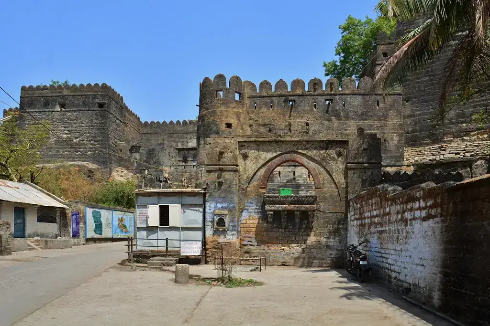
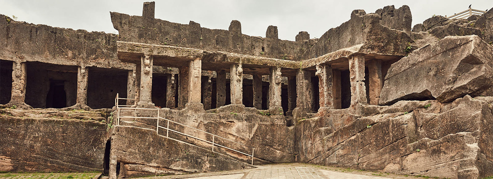
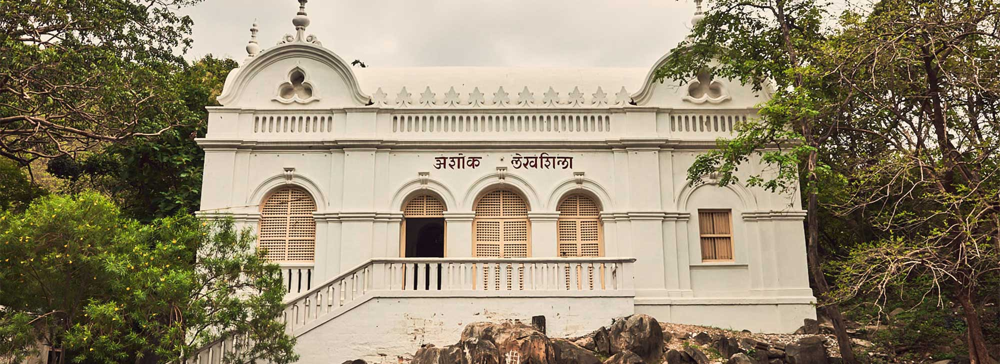
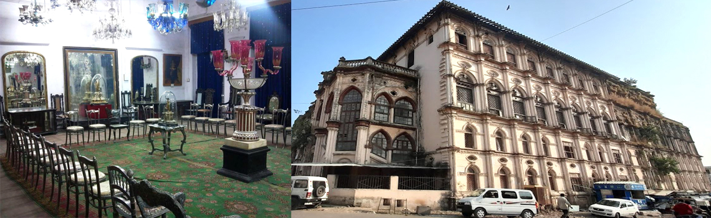
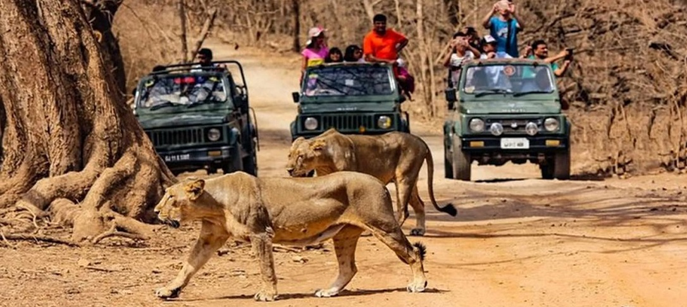
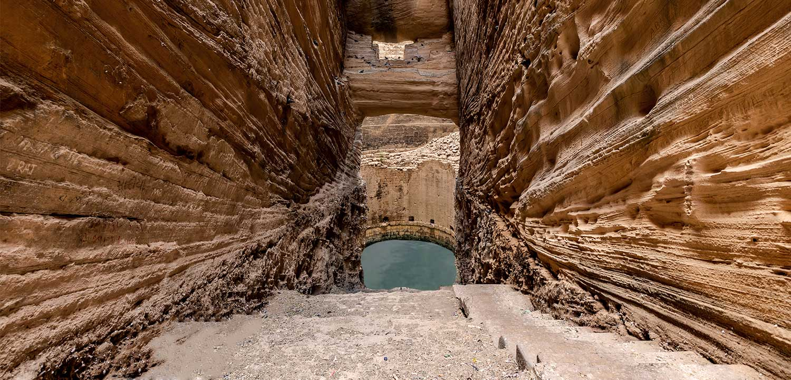

Uparkot Fort: A Historical Marvel
Uparkot Fort is a magnificent fort with a rich history, offering stunning views of the city.
Fun Fact:
~It was built in the 2nd century and has witnessed many battles!
Things to Explore at Uparkot Fort:
-
Ancient Architecture:
Marvel at the intricate carvings and architecture of the fort!
-
Stepwells:
Explore the ancient stepwells within the fort complex!
-
Scenic Views:
Enjoy panoramic views of Junagadh from the fort walls!
-
Historical Exhibits:
Learn about the history and significance of the fort through exhibits!
-
Photography:
Capture stunning photographs of the fort and its surroundings!
Why Visit Uparkot Fort?
!Because it’s a historical gem that offers a glimpse into Junagadh’s glorious past!

Girnar Hills: A Spiritual and Natural Retreat
Girnar Hills is a sacred pilgrimage site with ancient temples and breathtaking landscapes.
Fun Fact:
~It’s one of the oldest mountain ranges in India, with peaks that rise over 1,000 meters!
Things to Explore at Girnar Hills:
-
Temples:
Visit the ancient temples dedicated to various deities!
-
Hiking Trails:
Embark on hiking trails that lead to the hilltop for stunning views!
-
Wildlife:
Spot diverse wildlife and flora in the surrounding forests!
-
Scenic Views:
Enjoy panoramic views of Junagadh and the surrounding landscape!
-
Cultural Experience:
Experience the local culture and traditions of the region!
Why Visit Girnar Hills?
!Because it’s a perfect blend of spirituality, nature, and adventure, offering a unique experience!

Buddhist Caves: Ancient Rock-Cut Wonders
The Buddhist Caves in Junagadh are ancient rock-cut caves that showcase exquisite carvings and sculptures.
Fun Fact:
~These caves date back to the 2nd century BC and are a UNESCO World Heritage Site!
Things to Explore at Buddhist Caves:
-
Rock-Cut Architecture:
Admire the intricate carvings and sculptures on the cave walls!
-
Meditation Halls:
Explore the ancient meditation halls used by Buddhist monks!
-
Historical Significance:
Learn about the history and significance of these caves in Buddhism!
-
Scenic Surroundings:
Enjoy the serene surroundings and natural beauty around the caves!
-
Photography:
Capture stunning photographs of the ancient rock-cut architecture!
Why Visit Buddhist Caves?
!Because they offer a glimpse into the rich history and architectural brilliance of ancient India!

Ashoka Edicts: A Testament to Ancient Wisdom
The Ashoka Edicts in Junagadh are ancient inscriptions that reflect the teachings of Emperor Ashoka.
Fun Fact:
~These edicts are among the earliest examples of written Indian history!
Things to Explore at Ashoka Edicts:
-
Inscriptions:
Read the ancient inscriptions that convey messages of peace and morality!
-
Historical Context:
Learn about the significance of these edicts in Indian history!
-
Scenic Location:
Enjoy the scenic location where these edicts are situated!
-
Cultural Heritage:
Experience the rich cultural heritage associated with Emperor Ashoka!
-
Photography:
Capture photographs of the ancient inscriptions and their surroundings!
Why Visit Ashoka Edicts?
!Because they offer a unique insight into the wisdom and teachings of one of India’s greatest emperors!

Junagadh Zoo: A Family-Friendly Destination
Junagadh Zoo is a well-maintained zoo that houses a variety of animals and offers a fun day out for families.
Fun Fact:
~It’s one of the oldest zoos in India, established in 1863!
Things to Explore at Junagadh Zoo:
-
Diverse Wildlife:
See a wide range of animals, including lions, tigers, and birds!
-
Children’s Park:
Enjoy the children’s park with fun rides and activities!
-
Nature Trails:
Take leisurely walks through the zoo’s nature trails!
-
Educational Programs:
Participate in educational programs about wildlife conservation!
-
Photography:
Capture photographs of the animals and their habitats!
Why Visit Junagadh Zoo?
!Because it’s a family-friendly destination that offers a fun and educational experience for all ages!

Junagadh Museum: A Cultural Treasure Trove
Junagadh Museum is a cultural hub that showcases the rich history and heritage of the region.
Fun Fact:
~It houses a vast collection of artifacts, sculptures, and paintings!
Things to Explore at Junagadh Museum:
-
Artifacts:
Discover ancient artifacts and relics from different eras!
-
Sculptures:
Admire exquisite sculptures and carvings from the region!
-
Historical Exhibits:
Learn about the history and culture of Junagadh through various exhibits!
-
Guided Tours:
Join guided tours to gain deeper insights into the museum’s collections!
-
Photography:
Capture photographs of the museum’s stunning architecture and exhibits!
Why Visit Junagadh Museum?
!Because it’s a cultural treasure trove that offers a fascinating glimpse into the region’s rich heritage!

Gir Forest National Park: Home of the Asiatic Lion
Gir Forest National Park is the only natural habitat of the Asiatic lion, offering a unique wildlife experience.
Fun Fact:
~It’s the only place in the world where you can see Asiatic lions in their natural habitat!
Things to Explore at Gir Forest National Park:
-
Wildlife Safari:
Embark on a thrilling safari to spot Asiatic lions and other wildlife!
-
Bird Watching:
Enjoy bird watching with a variety of avian species in the park!
-
Nature Trails:
Explore nature trails and enjoy the serene beauty of the forest!
-
Photography:
Capture stunning photographs of wildlife and landscapes!
-
Eco-Tourism:
Experience eco-tourism initiatives that promote conservation and sustainability!
Why Visit Gir Forest National Park?
!Because it’s a unique opportunity to witness the majestic Asiatic lion in its natural habitat!

Junagadh Stepwell: A Marvel of Ancient Engineering
The Junagadh Stepwell is an architectural marvel that showcases the ingenuity of ancient engineering.
Fun Fact:
~It’s one of the largest stepwells in Gujarat, built to store water during dry seasons!
Things to Explore at Junagadh Stepwell:
-
Architectural Design:
Admire the intricate carvings and design of the stepwell!
-
Water Storage System:
Learn about the ancient water storage system used in the stepwell!
-
Scenic Surroundings:
Enjoy the serene surroundings and natural beauty around the stepwell!
-
Cultural Significance:
Experience the cultural significance of stepwells in Indian history!
-
Photography:
Capture stunning photographs of the stepwell and its architectural beauty!
Why Visit Junagadh Stepwell?
!Because it’s a marvel of ancient engineering that offers a unique glimpse into India’s architectural heritage!